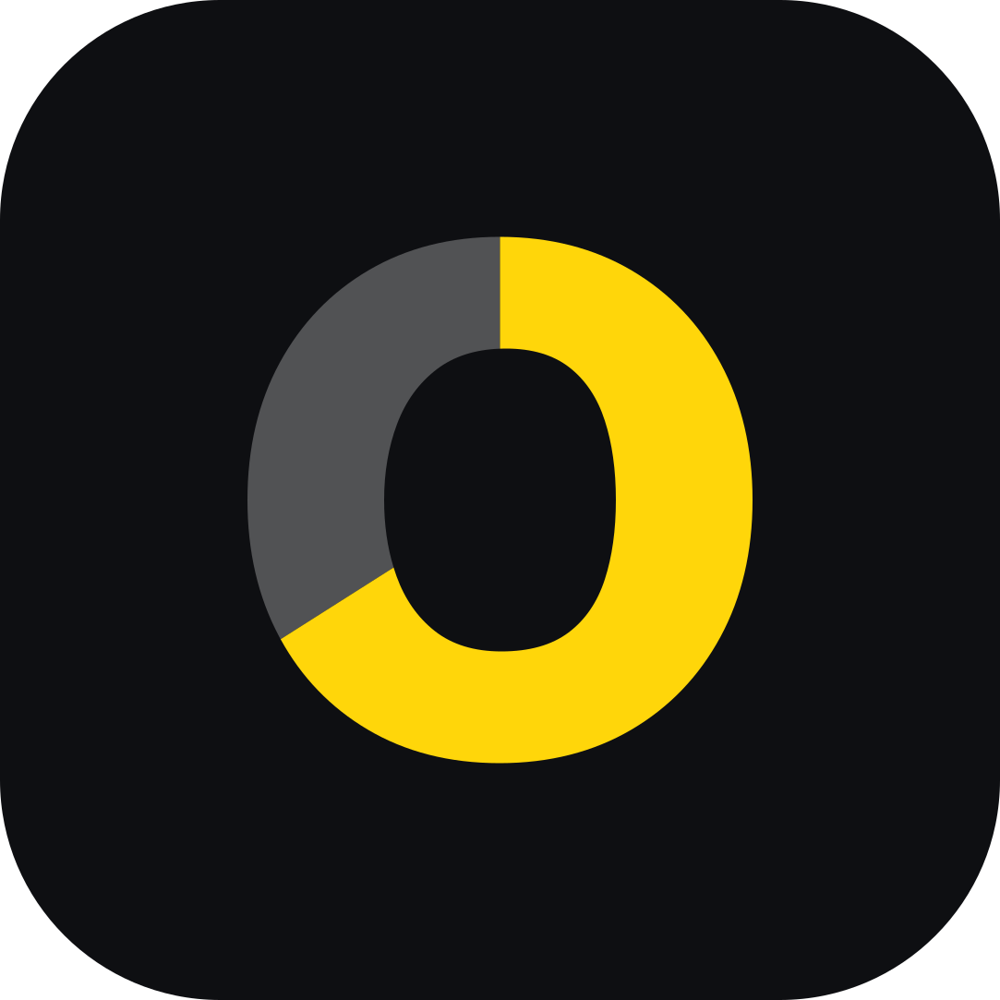
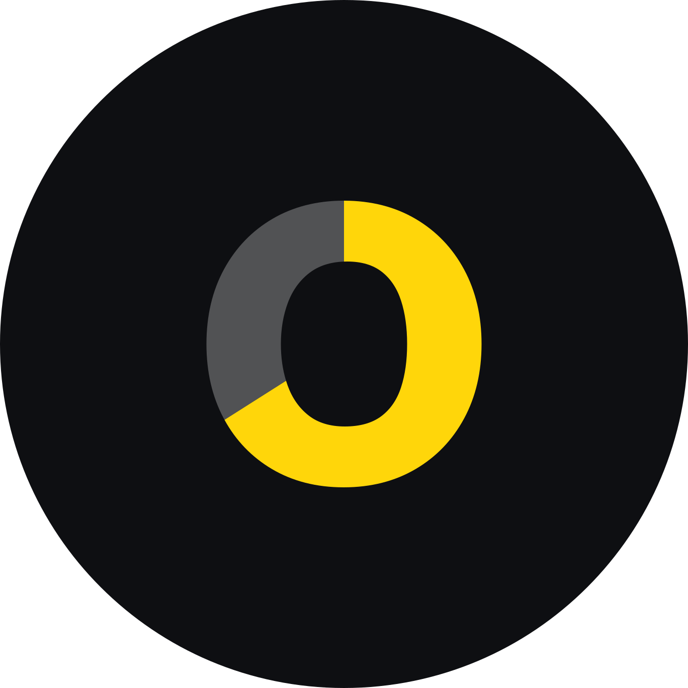
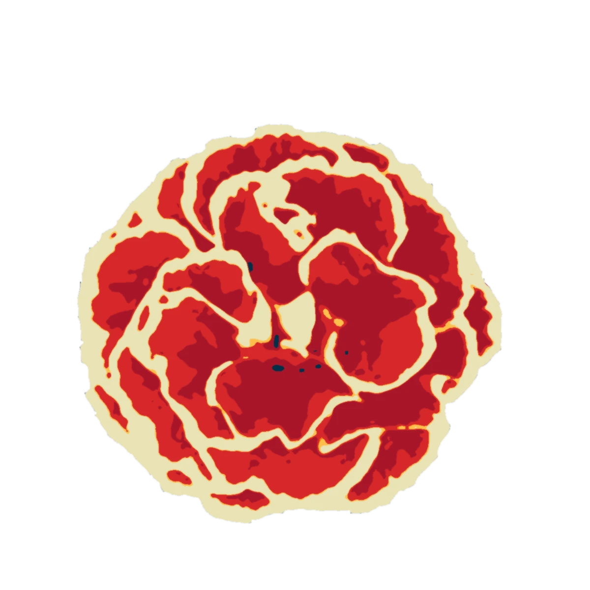
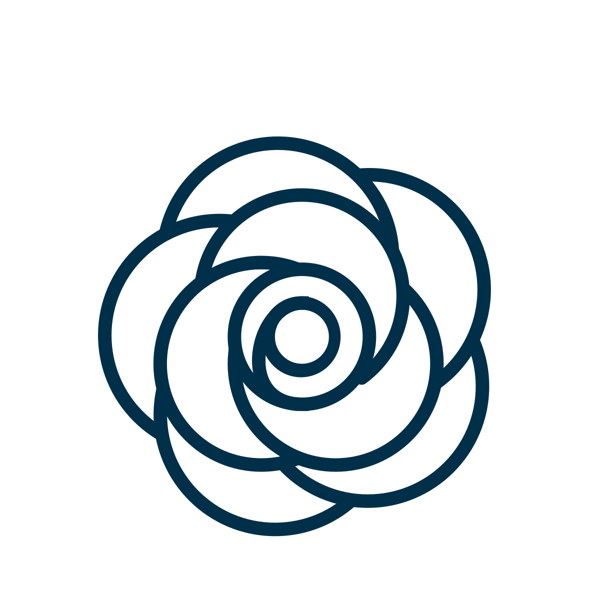
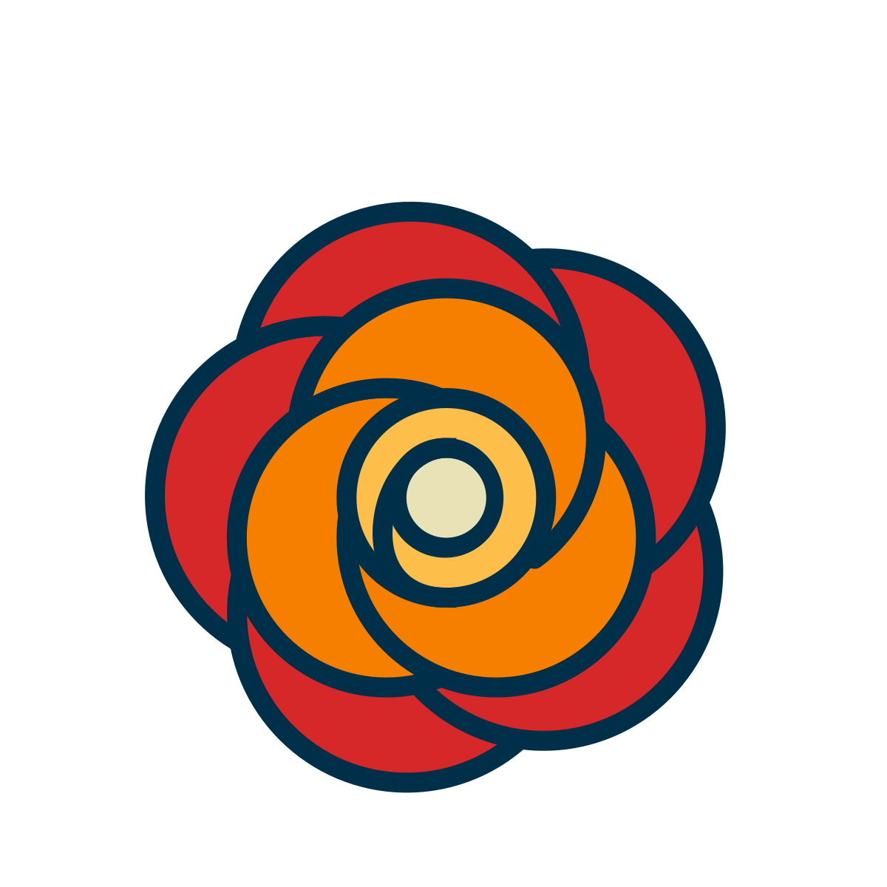
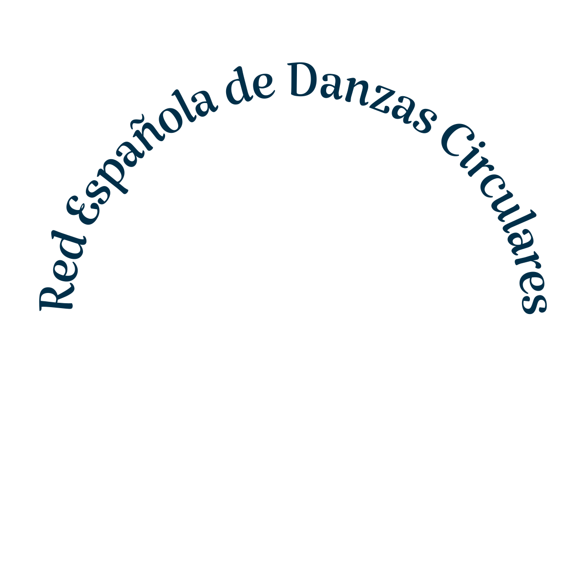
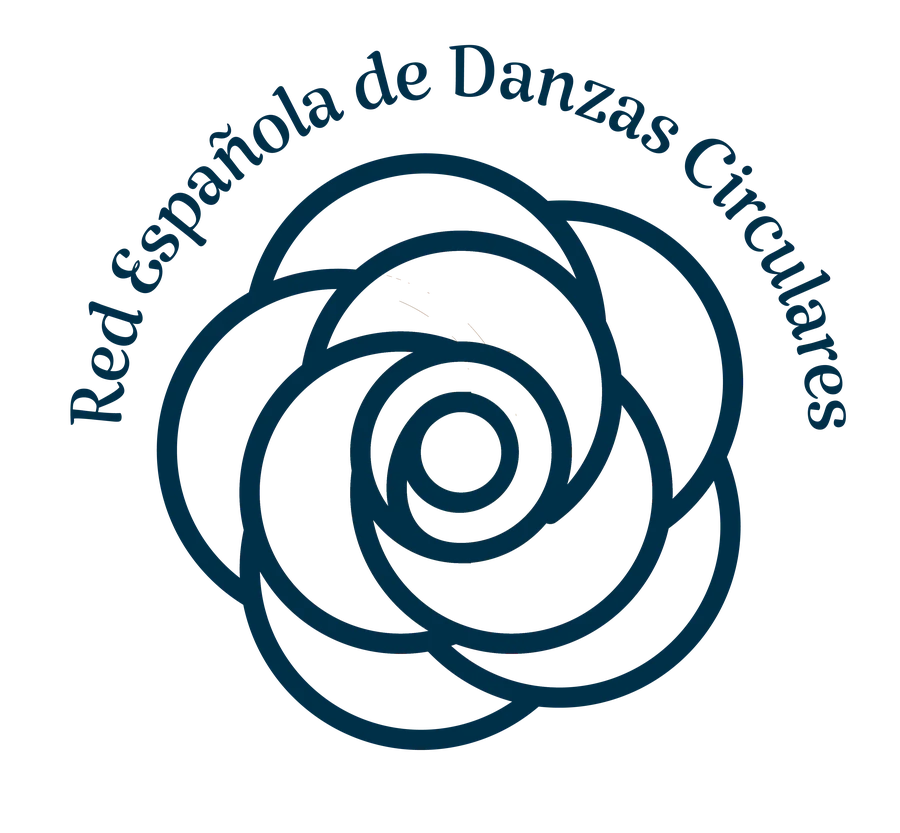
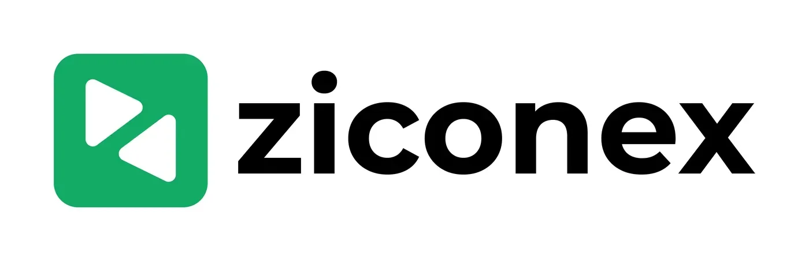

Débora Malqui · Brand design
Four brands, from the first idea to real use.
Each case shows the final logo with its versions and uses, the idea behind it and the path that led there, with the tests of every step. They run from the most recent to the oldest.
2026 · Full identity
Medido
A second opinion on what a business pays for marketing, in the United States and Israel, in English and Hebrew. The brand had to feel like a measuring instrument without drawing one.
- Logo
- Hebrew
- Palette
- Typography
- Guidelines
- Website
The idea
The name says what it does. The final o is a ring filled to 66 %, clockwise: a measurement that shows what is there and what is missing, which is the rule of the whole brand.
The ring's counter is identical to the counter of the d. In Hebrew, the final vav fills the same way, up to the top of the dalet. Yellow exists only on black or as a background behind black.
- Role
- Brand, guidelines and website design
- Deliverables
- Logo on three surfaces and in Hebrew, ring, favicon, avatar, delivery board, guidelines and website
- Status
- Logo closed and delivered
Path
Four directions, nine references
A board with four worlds (tape measure, ledger, instrument and topography), built from nine reference sites and the month's web design awards. The ledger base stayed, the report an accountant would sign, with the instrument's typography.
Six palettes
On that base I built six palettes, each applied to a sample report with its contrast calculated. None convinced yet.
The obvious was discarded
The ruler and the tape measure were left out because they say construction, not marketing. Then I tried five search symbols: the o as a magnifier, the name inside a search box, the first result, the answer and the click. Not those either.
Six marks made only of letters
I moved to marks without an icon: the full stop, the M as a chart, the highlighter, the block, the o that fills up and the slope. The fifth stayed.
The o as a ring
I measured the ring on the real o of twelve typefaces, with Hebrew in all of them, until it fit the word. Three finalists remained: Plus Jakarta Sans, Manrope and Schibsted Grotesk.
The real logo, in eight palettes
With the ring chosen, I converted the logo to real outlines and tested it in eight palettes, with the favicon, the avatar and the trust labels beside it.
Black and yellow, with the contrast calculated
I tried seven yellows. The calculation showed that yellow on white scores between 1.2 and 2.1, and on black between 8.9 and 16.6. Hence the rule: yellow goes on black or behind black, never as lettering on a light background.
Plus Jakarta versus Manrope
The two finalists, with the same yellow, the same ring and the same surfaces, side by side. Manrope 800 won, with more identity, and Assistant 800 for Hebrew.
Trained-eye adjustments
The counter of the o became that of the d. The ring settled at 66 %. In Hebrew, the cut of the vav lines up with a line of the dalet.
Delivery
Versions, ring, favicon and avatar, clear space, minimum sizes and what not to do, all on one board. The files are outlined, with no dependency on the font. Then came the guidelines and the website.
Versions



Uses
Specifications
- Black
#0E0F12 - Sun Yellow
#FFD60A13.6:1 on black - White
#FFFFFF - Support grey
#A7ADB88.5:1 on black
- Typography
- Manrope 800 for the logo and headings, Assistant 800 for Hebrew, JetBrains Mono for data.
- Clear space
- x is the height of the o. Clear on all four sides.
- Minimum size
- 72 px wide on screen (20 mm in print), 64 px in Hebrew. Below that, the ring alone.
- Colour rule
- Yellow only on black or as a background behind black. Never yellow lettering on a light background.
2026 · Personal brand
DiDí
The logo of my own portfolio. It existed only as a 380 × 193 px image. I rebuilt it as a vector by measuring every shape, adjusted it and turned it into a system.
- Vector logo
- One colour
- Favicon
- Motion
- Own typeface
The idea
DiDí reads without a typeface: two open Ds, with no stem, and two short bars, with an accent tilted at −50° that is the only diagonal and bends everything else. The pink D enters cut off from the edge: that cut is the logo's motion.
Five pastels of similar lightness, which read as a family. Di, Dí: two beats, the second with an accent, the way the name is said.
- Role
- Reconstruction, adjustment and brand system
- Deliverables
- Vector logo, one-colour light and dark, stacked, monogram, favicon, motion and two typefaces
- Status
- In use on this site
Path
A PNG as the only file
The logo existed only as a cropped 380 × 193 px image, with no vector and no design file. Before improving anything it had to be rebuilt.
Measuring instead of redrawing
I measured every shape by colour (centres, radii, thicknesses and the angle of the accent) until the vector matched the original by 95.4 %. That is the maximum possible: the rest is the anti-aliased edge of a pixel.
Six small adjustments
I corrected what a trained eye sees as construction noise: three thicknesses, two D sizes, three baselines, a different counter in each syllable and a clipped accent. I did not touch what makes it this logo: the angle, the cut and the five colours.
Backgrounds and contrast
I tested five backgrounds with the contrast calculated. The pastels pass 7:1 on charcoal, graphite and night blue. On light there is a version of the same family with more ink, and a one-colour version for signatures and stamps.
A D without a stem, in the letters too
I redrew the capital D of the site's typefaces without a stem, with the same construction as the logo. DiDi Sans, based on Figtree, and DiDi Mono, based on DM Mono, were born, both open-licensed. This page is set in them.
Specifications
- Pink
#E890CCaction - Light blue
#80ECECnavigation - Yellow
#DCD060attention - Blue
#70B4F4data - Green
#ACEC84correct - Night blue
#0F1B2Dsurface
- Typography
- DiDi Sans for headings and text, DiDi Mono for labels and data.
- Clear space
- x = 40 units, two strokes, 0.21 of the height. The cut D can bleed against the edge or keep the same x, never an in-between margin.
- Minimum size
- 120 px wide on screen (30 mm in print). Between 64 and 120 px only in navigation bars on charcoal. Below 64 px, the Di monogram.
- One colour
- Light (#F2F2F2) on charcoal, or dark on light.
2024 · Logo and brand for a festival
Red Española de Danzas Circulares
The network that brings together the people who dance circle dances in Spain, and its first festival, “Directo al corazón”, in Sant Feliu de Llobregat, Barcelona, in 2024.
- Symbol
- Festival logotype
- Brochure
- Social
- T-shirt

The idea
Circle dances are danced in a circle, and the brand tells it: petals turning into a spiral centre, like a circle of dancers. The flower is the carnation, the one associated with Spain, and the name surrounds it in an arc to close the circle.
The festival speaks more directly. “Directo al corazón” is written in an artistic brush lettering, in red, and the o of corazón becomes a heart drawn in one stroke. It is the same group with two voices: the network, calm, in navy and spiral; the festival, direct, in red.
- Role
- Logo of the network, festival logotype and pieces
- Deliverables
- Symbol in colour and line, festival logotype, brochure, registration email, social posts and T-shirt
- Festival
- 2024, Sant Feliu de Llobregat, Barcelona
Path
Starting with the obvious
First I drew a ring of turning figures and a pinwheel of petals. They said dance, but they did not say Spain.
From the carnation to the symbol
I swapped the people for a flower, the carnation, associated with Spain. The animation shows the path: the photo, the synthesis in the brand colours, the line drawing itself while turning like a ring, the colour opening from the spiral and the name.




- Photo
- Synthesis
- Line
- Colour
- Name
Circle and spiral
The petals turn towards a spiral centre: the dance. It stayed in colour and in a one-colour line version. The name surrounds the flower in an arc, in a calligraphic serif, so that the whole is another circle.
The festival, more direct
For “Directo al corazón” I made its own logotype, with artistic brush lettering and the o turned into a heart. It started in blue and ended in the red of the flower. A small line goes with it: “Festival de danzas circulares, primera edición”.
The system in use
A five-colour palette carried the brand to a brochure, an invitation email with the registration, social posts, a T-shirt and a phone mockup. It is all below, under Uses.
Versions

Uses
Specifications
- Navy blue
#002F49outline and name - Red
#D62729flower and festival - Orange
#F77F00 - Amber
#FDBF4Acentre - Cream
#E9E2B6background
- Typography
- Calligraphic serif in an arc for the network. Artistic brush lettering, with the heart o, for the festival.
- Colours
- Values taken from the delivered file.
2023 · Brand system
Ziconex
Online therapy in Spanish for people living outside their home country. The logo came to me already made; from it I built the brand: the color, the illustration and every piece, from social media and posters to the launch and the landing page.
- Colour
- Illustration
- Social
- Posters
- Launch
- Landing page

The idea
A mental health brand has to feel calm before it says anything. On top of the logo’s green I added a soft mint, clouds and flat characters with simple shapes, showing real people talking on video without falling into stock photography.
The same system carries everything: the feed explains therapy one post at a time, the posters speak about what happens inside each of us, and the ads repeat the calm of the face above the clouds.
- Role
- Brand system built from a logo I received
- Deliverables
- Logo clear space, avatars, social media, posters, launch ads and the landing page with its measurement setup
- Client
- Ziconex, Inc., online therapy in Spanish (USA, remote)
Path
The starting point
The logo arrived already made: two play triangles, like those of a video call, that together form the Z. It is not my design. My work started there: turning it into a brand that felt like a safe place.
Calm before anything else
To the logo’s green I added a soft mint and white clouds. A face with closed eyes, floating above the clouds, became the image of the ads.
A style of illustration
Flat people, with simple shapes and bright colors, the style that grew warmer in 2023. It works for therapy: it shows real people on video calls without the coldness of a stock photo.
Explaining therapy, one post at a time
On social media, the brand teaches: what psychoanalysis is, what a first session is like, the therapeutic journey. Carousels, single posts and a feed in the same green.
The launch: one line in every size
To go live, a single line, “Terapia online en tu idioma” (online therapy in your language), and a single button, “Conocer más” (learn more). The face above the clouds and the line were adapted to every ad format, from the banner to the skyscraper, and all of them led to the landing page.
The measurement setup
The landing page repeated the promise, “Es acá. Psicoterapia online en español” (It’s here. Online psychotherapy in Spanish), and asked for a single piece of data, the email, to reserve a spot, at the top and again at the end. I left the full journey set up (ad, landing page, email, waiting list), with Google Tag Manager on the page to record each step, and the A/B tests ready: six headlines (one of them, “No cualquier psicólogo. Tu terapeuta a la medida”, Not just any psychologist. A therapist made to measure), the button’s text, size and placement, and a one-field or two-field form.
Versions
Uses
Specifications
- Green
#13AA65logo - Mint
#ACEACCbackgrounds - Deep green
#005607carousels - Black
#000000name
- Logo
- Received already made, with its green. I added the clear space and the social media versions.
- Colours
- Values taken from the delivered files.
Brands by Débora Malqui. The years are those of the work. Back to About me